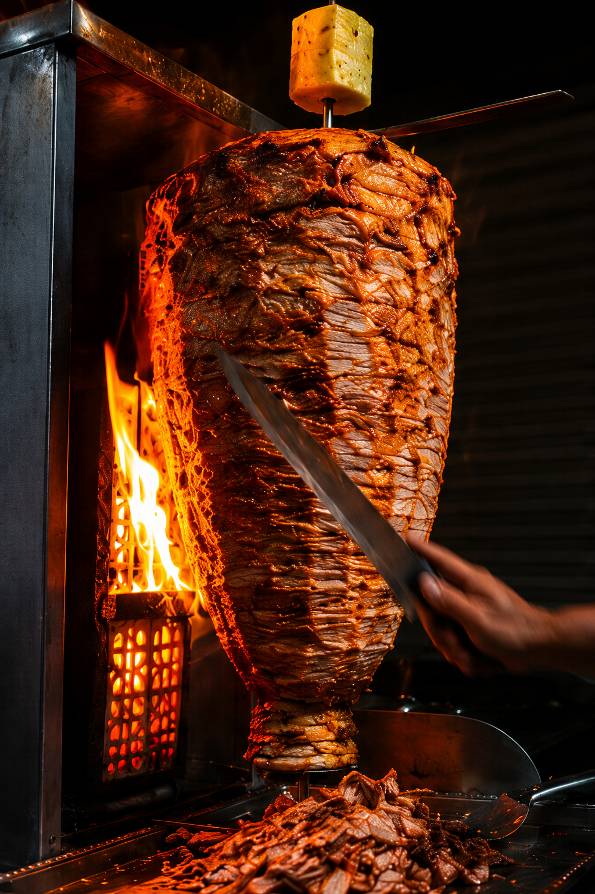

1985
Nace la taqueria
Primeras noches de servicio en Neza con receta familiar y salsa de la casa.
Tres generaciones sirviendo tacos con alma, humo y salsa que sí pica. Tradición familiar desde 1985. No aceptamos imitaciones.


Nuestro Pastor es leyenda. Carne marinada en nuestro adobo secreto por 24 horas, cocinada a fuego lento en el trompo, coronada con piña asada, cilantro y cebolla. Un bocado de cielo callejero.
"El mejor pastor de todo Neza. Llevo viniendo desde hace 10 años y la calidad nunca baja. Las salsas están para llorar de felicidad."
- Carlos M.
"Los alambres son una locura de grandes. Con uno comen dos, pero están tan buenos que te lo acabas solo. 100% recomendados."
- Ana P.
"Atención súper rápida a pesar de que siempre está lleno. El suadero se deshace en la boca. Un tesoro escondido."
- Luis G.
"Las tortas cubanas son enormes y tienen de todo. Excelente ambiente para venir con la familia el fin de semana."
- Familia Rodríguez
"Si no has probado sus frijoles charros, no has vivido. Todo excelente, desde el servicio hasta la comida."
- Roberto S.
"Auténtico sabor callejero. Precios muy justos para la cantidad y calidad que sirven. Mis respetos para los taqueros."
- Diana V.
Empezamos con un trompo, una plancha y muchas ganas de servir tacos bien hechos en la colonia.
Lo que arrancó como un puesto familiar se volvió punto de reunión del barrio. Recetas caseras, adobo propio y el mismo cuidado de siempre en cada orden.
Hoy seguimos con la misma misión: sabor auténtico, porciones generosas y atención de casa. Esta historia sigue creciendo, taco por taco.
1985
Primeras noches de servicio en Neza con receta familiar y salsa de la casa.
2001
Se amplía el menú, llegan nuevas especialidades y crece la tradición familiar.
Hoy
Seguimos perfeccionando cada taco y atendiendo a nuestros clientes como en casa.
Cáele a echarte unos buenos tacos. Estamos en el corazón de Neza, listos para atenderte como te mereces.
Dirección:
Av. Pantitlán 123, Col. Evolución,
Nezahualcóyotl, Estado
de México.
Horario:
Lunes a Domingo: 5:00 PM - 3:00 AM